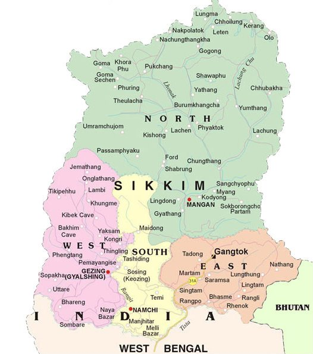

LET'S HAVE A LOOK AT THE TOUR MAP
WHERE TO VISIT , WHAT TO SEE?
SOME HOT PICKS(#HAVE_TO_VISIT)
- GANGTOK - ONE OF THE MOST BEAUTIFUL HILL STATIONS IN THE COUNTRY
- NORTH-SIKKIM - SHARES BOUNDARY WITH CHINA AND NEPAL
- DO DRUL CHORTEN - ONE OF THE MOST IMPORTANT STUPAS, IT HAS IMPORTANT MANTRAS ENGRAVED ON CYLINDRICAL WHEELS WHICH CAN BE ENCHANTED BY ROTATING THEM
- BARSEY RHODODENDRON SANCTUARY - PARADISE FOR NATURE LOVERS
- TINKITAM - PETITE VILLAGE IN SIKKIM, VIEWPOINT FOR MOUNT KANCHENJUNGA
- KASTURI TREK - PASSES GOECHA LA PASS THAT OFFERS EXTRAORDINARY PANORAMIC MOUNTAIN VIEW
- DZONGRI TREK - ONE OF THE MOST BEAUTIFUL VALLEYS
- TENDONG HILL - MARVELLOUS VIEW OF THE SIKKIM VALLEY
- TSOMGO LAKE - POPULARLY KNOWN AS CHANGU LAKE ALONG THE NATHU LA HIGHWAY
- NAMCHI - TOP OF THE SKY
- KANCHENJUNGA NATIONAL PARK
- YANGTEY - INSTANCE OF PARADISE BY MONSOONS
- PELLING - THE FAMOUS PEMAYANGSTE MONASTRERY
- CHOLAMU LAKE - 14TH HIGHEST LAKE IN THE WORLD AND THE HIGHEST LAKE IN INDIA
- THANGU VALLEY
- LACHNG - TOURIST SPOT WHERE THE TWO TRIBUTARIES LACHUNG AND LACHEN MEET
- YUMTHANG VALLEY
- LACHEN - WELL KNOWN FOR THE LACHUNG MONASTERY
- NATHU LA PASS - MOUNTAIN PASS IN THE HIMALAYAS THAT JOINS SIKKIM AND CHINA
- GURUDONGMAR LAKE - SECOND HIGHEST LAKE OF SIKKIM
OTHER_ATTRACTIONS
- BORONG - SMALL BEAUTIFUL VILLAGE
- MANGAN - CAPITAL TREKKING POINT OF THE TOURISTS
- RAVANGLA - PETITE TOWN WITH HIGH FORESTED HILLS
- CHOPTA VALLEY - VALLEY OF FLOWERS
- BIKSTHANG - SMALL FARMHOUSE NEAR PELLING
- GOECHA LA - TREKKING
- GEYZING - LOFTY AND MAJESTIC MOUNTAINS
- RUMTEK MONASTERY - ONE OF THE LARGEST AND MOST SIGNIFICANT MONASTERIES OF SIKKIM
- ARITAR - NATURAL BEAUTY, TEMPLES AND MONASTERIES
- ZULUK